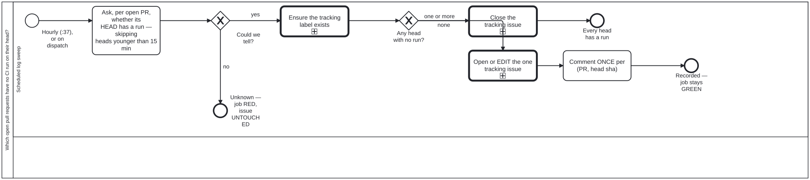

Generated from
cat-harness/processes/sdlc/pr-checks-present.bpmnbygen-processes-viz.ts— do not edit here. All processes
Process_PrChecksPresent · strict · 5 step(s)
Find the open pull requests whose head has no CI run, past an age gate, and say so on one tracking issue and once per head on the pull request. A PULL REQUEST WITH ZERO CHECKS IS INVISIBLE PRECISELY BECAUSE NOBODY IS LOOKING. Bean 3pqn. check:head-has-run answers this for one commit when somebody remembers to ask; this is the half that asks when nobody does, which is the only placement that addresses the defect rather than the symptom.
MEASURED 2026-09-20 over the six open pull requests here: TWO had no run of any kind on their head, both updated minutes earlier. A third of the open set, with nothing to merge on.
THE 15-MINUTE AGE GATE IS THE DIFFERENCE BETWEEN USEFUL AND IGNORED. A head pushed thirty seconds ago legitimately has no run yet, and a sweep that reports those is one nobody reads — this bean’s own failure, reproduced by its fix. A younger head is NOT JUDGED rather than called clean, which is the third state again.
ONLY unknown FAILS THE JOB. A finding records itself and the workflow stays GREEN, the same inversion as ci-health: the repository speaks through the tracking issue, while a sweep that could not look turns red. And a sweep blind on one pull request has not cleared the others, so ONE unreadable answer makes the whole run unknown — never a partial clean.
TWO CHANNELS, ON THE OWNER’S INSTRUCTION, AND THEY BEHAVE DIFFERENTLY. The tracking issue is EDITED IN PLACE, never appended to. The per-PR comment is posted ONCE PER (PULL REQUEST, HEAD SHA), keyed by a marker in the body: hourly comments without that key would put twenty-four notifications a day on one unchanged pull request, which is how a warning gets muted.

| lane | role | what it does here |
|---|---|---|
| Scheduled log sweep | build-pipeline |
Three exit states, and the job’s own colour tracks none of them the way a reader would expect: a finding is fully recorded — issue tracked, PR commented — and the job still ends GREEN, because the finding is the repository’s problem to see in the tracking issue, not this lane’s to fail on. Only UNKNOWN turns the job itself RED, and one unreadable PR is enough to fail the whole sweep — this lane never reports a partial clean. |
Every one of the 5 step(s) is documented.
| step | lane | skill / sub-process | what it does |
|---|---|---|---|
Ask, per open PR, whether its HEAD has a run — skipping heads younger than 15 minTask_Sweep |
Scheduled log sweep | ci-health |
Run check:prs-have-runs –min-age-minutes 15, writing the report file first. A head younger than 15 minutes legitimately has no run yet and is skipped. Exit 0 clean, 1 findings, 2 could not determine; an exit 1 with no report file is a crash and is treated as could-not-determine. |
Ensure the tracking label existsTask_Label |
Scheduled log sweep | ci-health |
Create the pr-no-checks label with –force so it exists before either issue path runs — the close path filters on it too, and on a repository that has never had a finding it would not exist yet. Skipped on an unknown verdict. |
Close the tracking issueTask_Close |
Scheduled log sweep | ci-health |
Clean: close the open pr-no-checks issue, if any, saying why (every open pull request’s head now has a CI run). Runs only on a clean verdict — on unknown the issue is left untouched and the job fails instead, because could-not-check is never rendered as clean. |
Open or EDIT the one tracking issueTask_Track |
Scheduled log sweep | ci-health |
Findings: EDIT the one open issue labelled pr-no-checks if there is one, otherwise create it, with the sweep’s report as the body. One issue edited in place, never a new issue or a comment per run, so the tracking issue never becomes a feed. |
Comment ONCE per (PR, head sha)Task_Comment |
Scheduled log sweep | issue-working |
Comment on each affected open PR once per (PR, head sha): a hidden marker carrying the sha is checked first, so a re-run on the same head stays silent and a new push can be reported again. A PR that is no longer open is skipped. |
Every one of the 2 decision(s) is documented.
| decision | what decides it | branches |
|---|---|---|
Could we tell?GW_Determined |
Asked of the verdict output of the Sweep step in .github/workflows/pr-checks-present.yml, which runs check:prs-have-runs --min-age-minutes 15. Exit 0 is clean, 1 findings, 2 could not determine; an exit 1 with no report file is a crash and is reclassified as could-not-determine, as is any other code. no is verdict == ‘unknown’: ‘Refuse to report success on an unchecked repository’ runs exit 1 and the tracking issue is left untouched. yes is verdict != ‘unknown’, the guard on ensuring the pr-no-checks label. |
no → Unknown — job RED, issue UNTOUCHED yes → Ensure the tracking label exists |
Any head with no run?GW_Finding |
Asked of the same verdict. none is verdict == ‘clean’: every open PR’s head older than 15 minutes has a run, and the tracking issue is closed. one or more is verdict == ‘findings’: the one tracking issue is opened or edited in place, and the workflow also comments once on each affected pull request. |
none → Close the tracking issue one or more → Open or EDIT the one tracking issue |